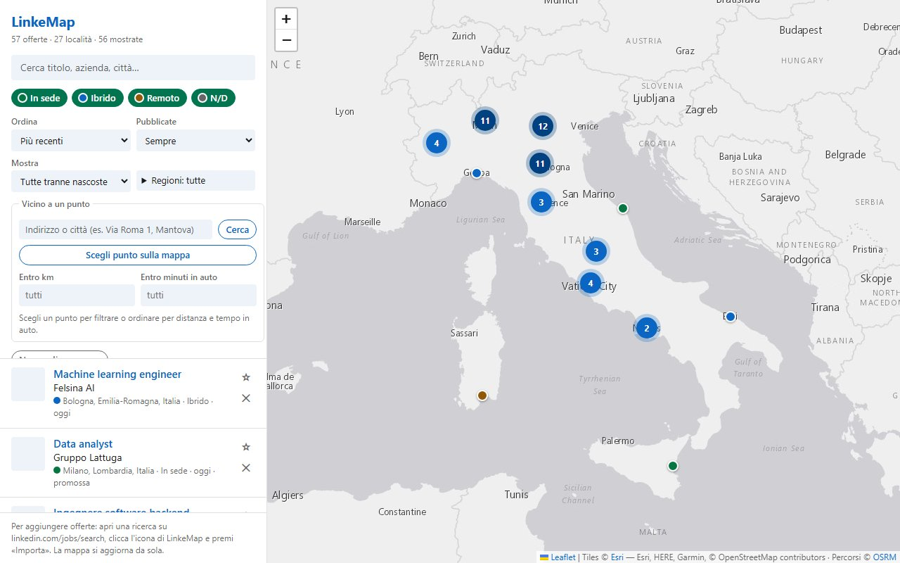
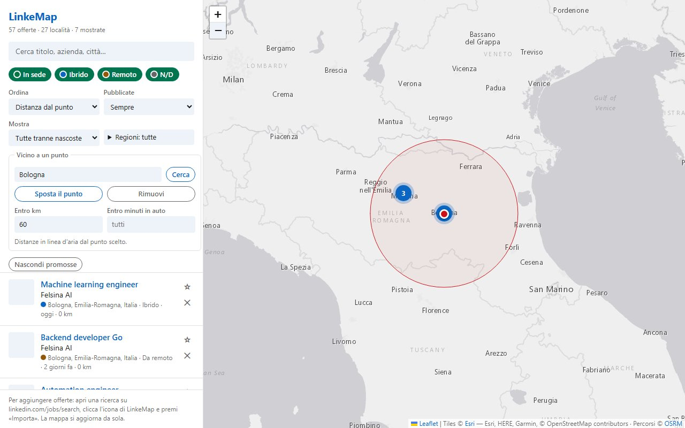
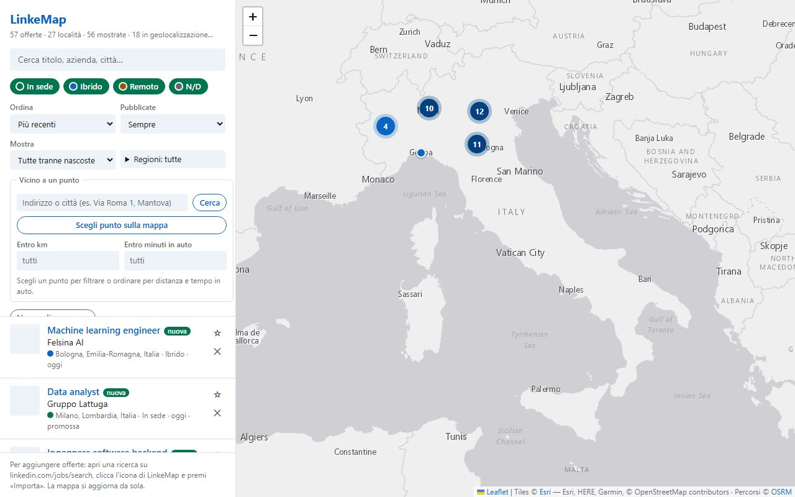

Ricerca intera
Tutte le pagine dei risultati, fino a 1000 offerte. Importando altre ricerche le offerte si sommano.
Estensione per Chrome, Edge e Brave · gratuita · open source
LinkeMap importa tutti i risultati di una ricerca su LinkedIn Jobs e li mette su una mappa interattiva. Scegli un punto, per esempio casa tua, e guarda solo le offerte entro 30 km o entro 45 minuti di auto. Niente account, niente server: i dati restano nel tuo browser.
La demo usa offerte e aziende inventate e gira qui, senza LinkedIn.

Apri linkedin.com/jobs/search da collegato e imposta parole chiave, località e
filtri. LinkeMap legge proprio quella ricerca.
Dall'icona di LinkeMap premi «Importa»: scarica tutte le pagine dei risultati, 25 offerte ogni 1,5 secondi, anche a popup chiuso.
Le offerte appaiono subito in lista e i segnaposto arrivano man mano. Filtra per regione, modalità, data, raggio in km o minuti in auto.
Sotto c'è la pagina della mappa dell'estensione, con 57 offerte inventate. Prova i filtri, scrivi il tuo indirizzo nel riquadro «Vicino a un punto», segna una preferita. L'indirizzo e i tempi in auto usano i servizi pubblici di OpenStreetMap, come nell'estensione.
Tutte le pagine dei risultati, fino a 1000 offerte. Importando altre ricerche le offerte si sommano.
Ogni località è cercata su OpenStreetMap dentro il suo paese, con la regione: niente "Italy" in Texas.
Un indirizzo o un clic sulla mappa, poi un raggio in km o i minuti in auto (stima OSRM, senza traffico).
Testo, in sede, ibrido o remoto, regione, data, promosse. Ordina per data, azienda, distanza o tempo.
Segna le offerte che ti interessano e togli di mezzo le altre, senza perderle.
Le offerte mai viste arrivate con l'ultima importazione hanno un'etichetta e un filtro.
Le offerte filtrate, con distanze e tempi, in un file che Excel apre senza conversioni.
La mappa segue il tema del sistema, anche se cambia a pagina aperta.


LinkeMap-<versione>-test.zip dall'ultima release.
chrome://extensions e attiva Modalità sviluppatore.
git clone https://github.com/Mattemn97/linkedin-map-4chromePoi «Carica estensione non pacchettizzata» sulla cartella clonata. Niente build: i file si caricano così come sono. Dopo una modifica premi ↻ sulla scheda dell'estensione.
La pubblicazione sullo store è in preparazione. Funziona anche su Microsoft Edge
(edge://extensions) e Brave (brave://extensions), con gli stessi
passi.
LinkeMap non ha un server. Le offerte, le preferite e i filtri stanno nello storage locale del tuo browser e se ne vanno con «Svuota» o disinstallando l'estensione. Nessuna statistica, nessuna pubblicità.
No: è la località dell'offerta indicata da LinkedIn (la città, non la via). Le offerte da remoto con località generica, per esempio "Italia", finiscono al centro del paese.
Importa solo la ricerca classica (/jobs/search/). Se sei nella ricerca con AI, il
popup te lo dice e ti offre un pulsante per riaprirla in modalità classica.
L'importazione fa richieste automatiche all'API interna di LinkedIn con il tuo account, a ritmo lento. I Termini di Servizio di LinkedIn vietano lo scraping automatico: usala con moderazione e a tuo rischio. LinkeMap è un progetto indipendente e non è affiliato a LinkedIn.
Sono una stima in auto senza traffico, dal server pubblico di OSRM. A piedi, in bici e con i mezzi non sono supportati.
Apri una issue su GitHub. Se l'importazione dà «Richiesta non accettata (400)», LinkedIn ha probabilmente cambiato la sua API.